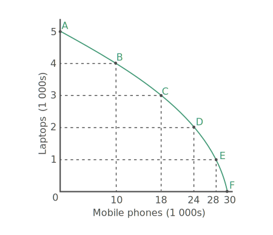

On the vertical axis, the number of laptops (in 1 000s) that can be produced is measured, while on the horizontal axis, the number of mobile phones (in 1 000s) that can be produced is measured.

If Zanadu makes efficient and full use of its resources, it can produce the following combinations:
- Point A indicates a combination of 5 000 laptops and 0 mobile phones
- Point B indicates a combination of 4 000 laptops and 10 000 mobile phones
- Point C indicates a combination of 3 000 laptops and 18 000 mobile phones
- Point D indicates a combination of 2 000 laptops and 24 000 mobile phones
- Point E indicates a combination of 1 000 laptops and 28 000 mobile phones
- Point F indicates a combination of 0 laptops and 30 000 mobile phones
Combining these points gives us a production possibilities curve or frontier